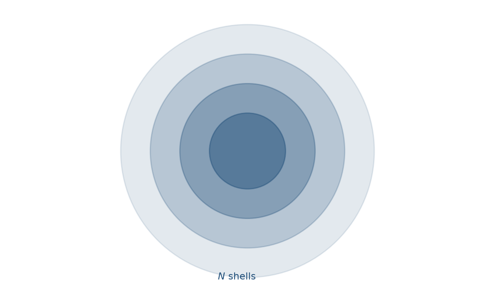
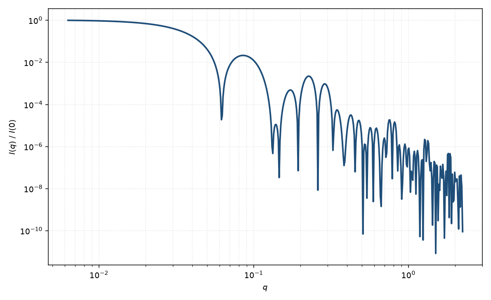

核–多层壳
core multi-shell
适用场景
核–多层壳把径向剖面离散成核加 $N$ 层同心均匀壳，每层有自己的厚度与 SLD。适用于量子点的多层配体/无机壳、层层组装胶囊、以及已知化学分层但层数固定的纳米颗粒。与洋葱球的差别主要是叙述方式：本页强调“核 + $N$ 层”的有限分层，洋葱强调连续或周期性径向剖面。
层数过多时参数迅速超过数据信息量。两层以上通常需要对比变分或固定若干 SLD。
物理图像
Pedersen（1997）把球对称粒子写成界面处 Rayleigh 振幅的线性组合：每增加一个半径处的密度跳变，就加一项 $(\rho_i-\rho_{i-1})V(R_i)\Phi(qR_i)$。这比在实空间逐壳积分更稳定，且 $N=1$ 时精确回到核壳球。
示意图


核心公式
出发点
稀释球对称粒子的散射振幅是径向衬度的正弦变换
$$F(q)=4\pi\int_0^{R_M} r^2\bigl[\rho(r)-\rho_{\mathrm{solv}}\bigr]\frac{\sin(qr)}{qr}\,\mathrm{d}r.$$核–多层壳把 $\rho(r)$ 离散成 $M=N+1$ 段常数：第 $i$ 区 $R_{i-1}<r\le R_i$ 取 $\rho_i$（约定 $R_0=0$，$i=1$ 为核），最外 $r>R_M$ 回到溶剂。
推导
逐壳积分，每段用均匀球原函数 $\int_0^{R} r^2\sin(qr)/(qr)\,\mathrm{d}r=V(R)\Phi(qR)/4\pi$，$V(R)=4\pi R^3/3$，$\Phi(x)=3(\sin x-x\cos x)/x^3$：
$$F(q)=\sum_{i=1}^{M}(\rho_i-\rho_{\mathrm{solv}})\bigl[V(R_i)\Phi(qR_i)-V(R_{i-1})\Phi(qR_{i-1})\bigr],$$其中 $V(0)\Phi(0)=0$。把同一 $\Phi(qR_i)$ 的系数合并：来自第 $i$ 段的 $+\rho_i$ 与第 $i+1$ 段的 $-\rho_{i+1}$，最外再减溶剂，得到界面跳变形式
$$A(q)=\sum_{i=1}^{M}(\rho_i-\rho_{i-1})V(R_i)\Phi(qR_i),\qquad \rho_0=\rho_{\mathrm{solv}},\; R_1<R_2<\cdots<R_M.$$$M=1$ 即均匀球；$M=2$ 即核壳球。稀释强度 $I(q)=n|A(q)|^2+B$。
低 $q$ 与渐近
$q\to 0$ 时 $\Phi\to 1$，超额散射长度是各壳体积的衬度加权
$$A(0)=\sum_{i=1}^{M}(\rho_i-\rho_{\mathrm{solv}})\bigl[V(R_i)-V(R_{i-1})\bigr].$$$R_g^2$ 由 $\int r^2\Delta\rho\,\mathrm{d}V/\int\Delta\rho\,\mathrm{d}V$ 给出，即各壳贡献 $(3/5)(\rho_i-\rho_{\mathrm{solv}})(R_i^5-R_{i-1}^5)$ 之和再除以 $A(0)$ 的体积因子。Guinier 指数在 $qR_g\lesssim 1$ 可用。
极小由多项 $\Phi(qR_i)$ 干涉决定，没有单一的 $\tan x=x$。大 $q$ 每项 $\sim q^{-2}$，尖锐界面的强度包络仍是 Porod $q^{-4}$；最外半径主导振荡相位。
参数表
| 参数 | 符号 | 含义 | 单位 | 典型范围 |
|---|---|---|---|---|
| 各层外半径 | $R_i$ | 第 $i$ 区的外半径 | Å | 递增，核约 10–200 Å |
| 各层 SLD | $\rho_i$ | 第 $i$ 区散射长度密度 | Å$^{-2}$ | 由组成或对比 |
| 壳层数 | $N$ | 核以外的均匀壳数目 | 无量纲 | 1–6（再多宜改径向剖面） |
| 溶剂 SLD | $\rho_{\mathrm{solv}}$ | 最外层以外的介质 | Å$^{-2}$ | 可调 |
拟合注意
相邻层的 $\rho_i$ 与 $R_i$ 强相关。把若干 $\rho_i$ 固定为化学计量值，只拟合厚度，是更稳的做法。多分散通常加在最外半径或核半径上。
取向无关。磁性多层（磁核、非磁壳、磁帽层）必须给每层磁 SLD，核通道与磁通道的 $R_i$ 可以不同（死层）。
相近模型
参考文献
- Pedersen, J. S. Analysis of small-angle scattering data from colloids and polymer solutions: modeling and least-squares fitting. J. Appl. Cryst. 1997, 30, 339–354. DOI: 10.1107/S0021889897002532